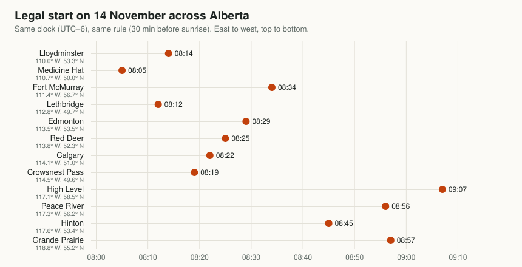

Project 05 · Web tool
Legal shooting hours, for your exact stand
Sunrise and sunset for your coordinates, not the nearest city, turned into legal light with your regulation's offsets, plus the time direct sun actually reaches your stand once the hills and the slope are counted. Print the whole season.
The calculator
Legal light
Show the season table, day by day
| Date | Legal start | Sunrise | Sunset | Legal end | Hours | Moon | Stand sun | UTC |
|---|
The regulations are the law, not this page. Rules differ by province, state, zone, species and season. Set the offsets to match yours, and check the official tables when in doubt.
Why your exact spot matters
Most hunters get sunrise from a weather app or a newspaper, which gives it for the nearest town. That's often good enough, and sometimes it's off by more than you'd guess.
The sun crosses the sky from east to west at 15 degrees of longitude per hour, or 4 minutes per degree. A time zone is about 15 degrees wide, but everyone in it shares one clock. So on any given day, sunrise comes earlier on the east side of a zone than on the west side. Alberta spans almost nine degrees of longitude, from Lloydminster at 110° W to the BC border near 120° W. That's over half an hour of sunrise difference on the same clock.
Latitude matters too, and it matters more as winter approaches. In November, the further north you go, the later the sun comes up and the earlier it sets.

Same province, same clock, same rule: legal light opens an hour apart.
Fort McMurray's legal start is 20 minutes later than Lloydminster's. The two towns are only 1.4 degrees apart in longitude, worth under 6 minutes; the rest comes from Fort McMurray being 3.5 degrees further north. For a stand an hour's drive from town, the difference from the town's published time is usually a few minutes. That's small, but it's exactly the margin that matters at first light.
How the window shrinks through the season
From early September to the winter solstice, the legal window shrinks fast, and the further north you are, the faster it shrinks. At Lethbridge's latitude it drops from about 14.4 hours on 1 September to 9.1 on 21 December. At Yellowknife's latitude it goes from 15.3 hours to 6.0.

Notice that the curves aren't symmetrical. In December the evenings stop getting earlier well before the mornings stop getting later. That's the equation of time: Earth's tilted axis and elliptical orbit make solar noon itself drift by several minutes over the year. The calculator includes it, which a "half the day length either side of noon" shortcut would miss.
What "sunrise" actually means
Sunrise sounds obvious, but it needs a precise definition to be calculable, and the standard one has two subtleties.1
- It's the top edge of the sun, not the middle. Sunrise is the moment the upper rim appears, when the sun's centre is still about 16 arcminutes, its radius, below the horizon.
- The air bends the light. Near the horizon, the atmosphere refracts sunlight upward by about 34 arcminutes, more than the sun's whole diameter. When you see the sun sitting just on the horizon, it is actually just below it.
Add those together and sunrise and sunset are defined as the moments the sun's centre is 0.833 degrees below a flat, sea-level horizon. Civil twilight, roughly the period when there's enough light to see outdoors without artificial light, runs until the centre is 6 degrees below. Many legal-hour rules land close to civil twilight in practice, because 30 minutes before sunrise is near civil dawn at Alberta's latitudes in the fall.
Hills don't move legal time. A ridge to the east delays when you see the sun, and a valley floor gets light late. Legal times still use the flat-horizon definition, so the calculator does too.
When the sun actually reaches your stand
Legal light is deliberately simple: one flat horizon for everyone. The sun that matters for hunting the stand is different. On a west-facing slope, under a ridge, or in a coulee, direct sunlight can arrive an hour or more after legal light opens, and leave well before it closes.
That moment matters because of thermals. Overnight, cooling air slides downhill, carrying your scent down the slope. Once direct sun warms the ground, the air above it warms and starts to rise, and the flow turns upslope. The switch follows the sun on that slope, not the clock, and not sunrise in town. SlopeShift measures the switch at a stand and learns how long after first direct sun it happens there; this calculator supplies the first-sun time anywhere.
Thermals follow the sun on your slope, not sunrise in town.
How it works
- The skyline. Tap Get terrain for this spot and the page downloads free, public elevation tiles for about 10 km around the stand.5 In Alberta each pixel covers about 23 metres. For 72 compass directions it walks outward, keeping the steepest angle up to the ground, and allows for the curve of the Earth and the bending of light near the ground.
- The slope. From the elevation around the stand it works out how steep the ground is and which way it faces. You can override both, or skip the download and type the skyline yourself, for example
90:8, 135:5for 8° up in the east and 5° in the southeast. - Direct sun. Minute by minute, the stand is in direct sun when the top edge of the sun clears the skyline in its direction and the sun is on the face of the slope. A steep north-facing slope in December gets none at all.
The result shows up beside the legal times, as a panorama of the skyline with today's sun path drawn over it, and as a gold band inside each day's bar on the season chart. The season table and CSV gain a "stand sun" column.
What it can't see. The elevation data is bare earth: no trees, no buildings. In timber, the canopy decides when sunlight reaches the ground, and that's usually later than this. Peaks more than 10 km away are ignored. Treat the time as when the slope could get sun.
How it was checked. A synthetic ridge 200 m high and 1 km east gives the expected 11.9° skyline and pushes first sun 75 minutes past sunrise without changing sunset. A 30° north-facing slope at 53.5° N gets no direct sun at the winter solstice, and an east-facing slope loses the sun before a west-facing one. The elevation tiles agree with an independent elevation service to within 7 m at three test points.
What already exists. The idea of terrain-shaded sun isn't new. HuntingNZ's map shows hours of direct sun with ridge shadows as a map layer for New Zealand,6 and photography apps draw the sun's path over the real skyline. We didn't find a hunting tool that puts first and last direct sun for a single stand next to that day's legal hours, anywhere with elevation data.
How the calculation works
The calculator uses the same equations as the US National Oceanic and Atmospheric Administration's solar calculator, which come from Jean Meeus's Astronomical Algorithms.2 For each date it works out where the sun is in the sky, then solves for when it crosses the required angle.
- Sun's position. From the date, compute the sun's declination (how far north or south of the equator it is overhead) and the equation of time (how far solar noon runs ahead of or behind clock noon).
- Hour angle. The hour angle is how far the sun is from its highest point, in degrees. For an event at a given depth below the horizon:
- Refine. The sun's declination changes a little between noon and sunrise, so the calculation is repeated twice at the newly estimated time.
- Offsets and clock time. Apply your before and after minutes, then format the result in your chosen time zone with the browser's built-in time-zone support.
If the cosine comes out above 1 or below −1, the sun never reaches that angle that day: polar night or midnight sun. The calculator says so instead of inventing a time. The whole thing is one small, dependency-free file, legallight.js.
Time zones, and Alberta's fall 2026
The calculation produces an exact moment. Turning that into the time on your watch is the job of the time-zone database: the worldwide record of every region's UTC offset and daylight-saving rules, which every phone, computer and browser carries a copy of.
In 2026 Alberta moved to permanent daylight time, so clocks don't fall back on 1 November.3 Alberta is now on UTC−6 all year. The current database release, 2026e, includes the change. A device or browser that hasn't updated still thinks Alberta switches to UTC−7 on 1 November, and will show every time from then on one hour early.
How to check. The calculator prints the UTC offset next to the times and in the last column of the season table. In Alberta after 1 November 2026 it should say UTC−6. If it says −7, pick "UTC−6 (fixed)" in the time-zone list.
The same trick works anywhere: if the offset on the page doesn't match the offset your clock is actually using, choose the fixed offset that does.
How it was checked
The test suite compares 508 sunrise, sunset and civil twilight times against astral, an independent open-source Python implementation.4 The 16 places run from Austin, Texas, to Yellowknife, plus Wellington, Cape Town and Uppsala. The eight dates cover both solstices, both equinoxes and the core of hunting season.
| Check | Result |
|---|---|
| Worst sunrise or sunset difference | 49 seconds |
| Civil twilight | within 1 minute, or 3 minutes near midsummer above 58° N, where the sun barely dips below 6° |
| Events land on the right local date | Edmonton, Honolulu and New Zealand |
| Offsets, and rules that end at sunset | applied exactly |
| Midnight sun and polar night | reported, not invented |
| Moon phase | matches published full and new moons, November 2026 |
The moon figure is the phase only, estimated from the average lunar month. It's good to about half a day, which is fine for judging how bright a night will be. It doesn't give moonrise or moonset.
Using it in the field
- Set it up at home. Enter your stand coordinates and your rule, and load the terrain while you have a connection. The page remembers them on that device, and only there. They're never put in the address bar, so sharing the link doesn't share your stand.
- Print the season. The printout is just the table, with your coordinates, rule and time zone in the heading. It folds into a licence holder and doesn't need a battery.
- Offline. Once loaded, the page doesn't need a connection to recalculate.
- Pair it with your scouting. If Trail Tally says the deer move at 07:40 and legal light opens at 08:29, that trail is a dawn sit only late in the season, or not at all.
Notes
- For the definitions of sunrise, sunset and twilight, and the refraction and semi-diameter values, see the US Naval Observatory's explanation of rise, set and twilight definitions. ↩
- NOAA Global Monitoring Laboratory, solar calculation details; Jean Meeus, Astronomical Algorithms, 2nd ed., Willmann-Bell, 1998. ↩
- Reporting on the change: "Alberta to make daylight saving time permanent". The change is in the IANA time-zone database release 2026e. ↩
- astral, a Python library for sun and moon calculations. The reference data and the test are in the project's tests folder. ↩
- Terrain Tiles on the Registry of Open Data on AWS, assembled by Mapzen from public sources including SRTM, the Canadian Digital Elevation Model and USGS 3DEP (full attribution). Only the tiles' map grid numbers are requested, which reveal the area at about the scale of a town. ↩
- "Solar analysis for hunting slopes," MapScaping, describing HuntingNZ's sun and shade tool. ↩